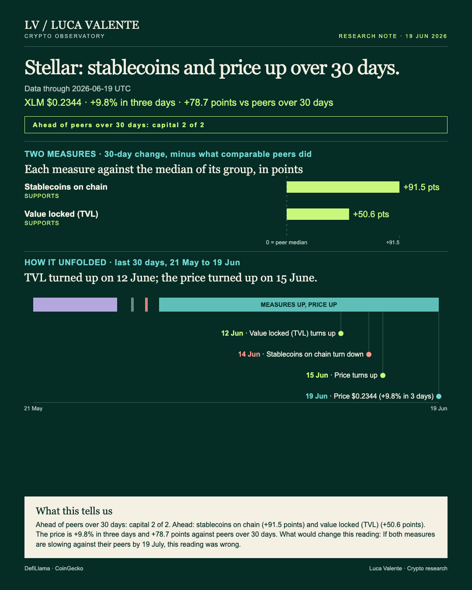
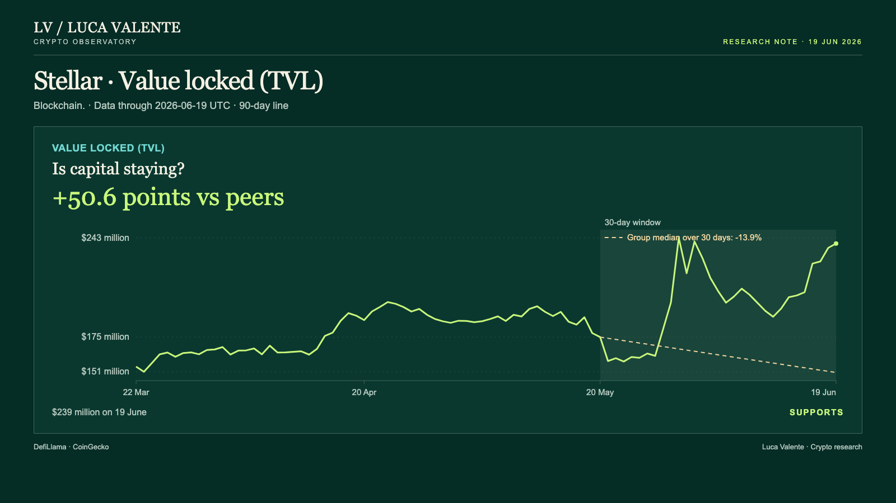
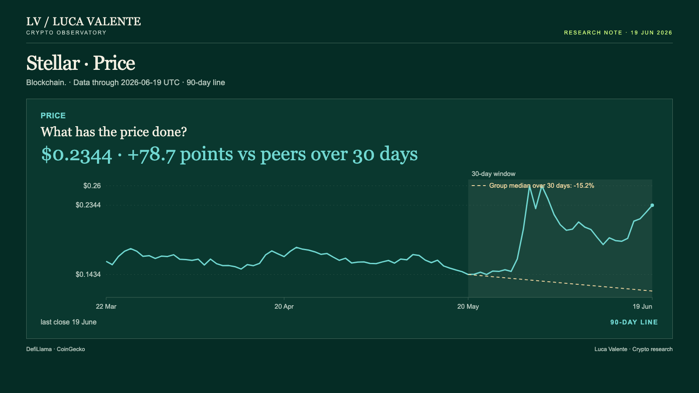

Training note, written on 24 September 2026 from data as of 19 June 2026. Not part of the published series.
Stellar's Value Locked Has Been Rising Since 12 June

I don't know yet whether Stellar's rise this month is its own, or something its whole group of chains is doing together. For anyone holding XLM or comparing chains, that difference matters: a gain the whole group shares says little about Stellar itself. Stellar is a blockchain, and XLM is its token.
Those two bars in that cover are both what I read as capital: money held in stablecoins on the chain, and money locked inside Stellar's protocols. That's different from usage, meaning fees or trading volume, and from development, meaning code commits; this note reads the three apart. One caution matters here: value locked is counted in dollars, so part of its move can be the price of what's deposited, not new money. Over the same 30 days, XLM's own price rose 63.5%, from $0.1434 to $0.2344. Stablecoins don't share that problem; their total is a measure of the chain itself.
Several numbers are missing here for Stellar: no fee figures, no trading volume, no developer commits, and no measure of users or wallets. That means I can't check whether more people are using the chain, only that more money sits on it. Nothing in what I have explains why either line turned when it did, and no news or announcement sits in the data either. None of this reaches past 19 June, so I can't yet say whether either line holds from here.
Seven days before this reading, on 12 June, value locked turned up first, and it has now risen eight days in a row. It stands at $239 million on 19 June, up 1.3% from $236 million the day before, and up 36.7% over 30 days from $175 million on 20 May. Against its peers, that 30-day gain is 50.6 points clear of the group median, which fell 13.9% over the same stretch.

Stablecoins on the chain turned the other way on 14 June, five days before this reading, falling in four of the six days since. Even so, the level is $802 million on 19 June, up 0.6% from $798 million the day before, and up 90.4% over 30 days from $421 million on 20 May. That 30-day gain is 91.5 points clear of the group median, which slipped 1.1% over the same period.
Last to turn was the price, on 15 June, four days before this reading, and it has risen five days in a row. XLM closed at $0.2344 on 19 June, up 4.1% in one day, up 9.8% over three days, and up 63.5% over 30 days from $0.1434. That 30-day gain is 78.7 points clear of the group median, which fell 15.2% over the same window. Value locked was rising for days before XLM turned up, a hint, though not proof, that its gain is more than the price of what sits in it.

Is this Stellar's own doing, or the group's? The group answers it: Stellar is one of 36 chains compared here, and of those, 33 report stablecoins, 35 report value locked and 32 have a listed price. This surprised me: the peer medians for both capital lines are negative, -1.1% for stablecoins and -13.9% for value locked, while Stellar sits 91.5 and 50.6 points above them. So the answer, on this reading, is Stellar's own: its group was retreating in dollar terms while its own capital and price climbed.
Only one test decides this for me, and neither line can fail it on its own: it takes both measures slipping against their peers. If both measures are slowing against their peers by 19 July, this reading was wrong. What this note reads right now is capital and price climbing side by side. If both lines are losing ground to the group by 19 July, the support behind this month's move will have faded.
For now, the line I trust least is the stablecoin one, down on four of the six days since 14 June though still up 90.4% over 30 days. Should it keep sliding, the capital case rests on value locked alone, the line most exposed to XLM's own price.
Sources: DefiLlama (stablecoins on the chain, value locked); CoinGecko (price).
Peer group: 36 chains tracked by DefiLlama (who they are). 'Net of the group' is the 30-day change minus the group's median.
Not financial advice. This is a research note based on public on-chain data.